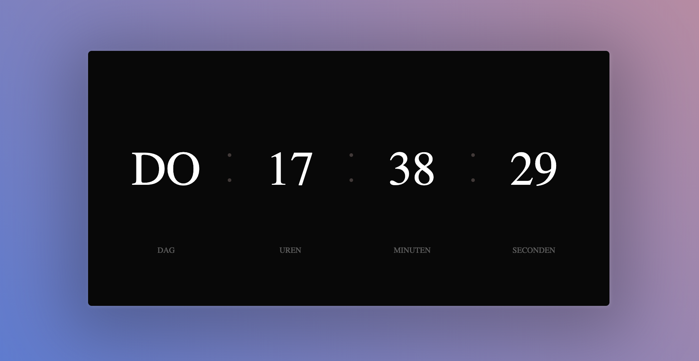

Actie toevoegen met JavaScript (vervolg)¶
Nu je de basis van JS hebt gezien, gaan we wat verder met moeilijker onderdelen.
Een klok maken¶
We gaan een klok maken op een HTML pagina. Je kan de volgende HTML
gebruiken:
<html>
<head>
<style>
body {
background: linear-gradient(45deg, #1870ed 0, #f18f88 100%);
font-family: 'Montserrat', 'sans-serif';
min-height: 100vh;
display: flex;
align-items: center;
justify-content: center;
}
.clock-container {
margin-top: 30px;
margin-bottom: 30px;
background-color: #080808;
border-radius: 5px;
padding: 60px 20px;
box-shadow: 1px 1px 5px rgba(255, 255, 255, .15), 0 15px 90px 30px rgba(0, 0, 0, .25);
display: flex;
}
.clock-col {
text-align: center;
margin-right: 40px;
margin-left: 40px;
min-width: 90px;
position: relative;
}
.clock-col:not(:last-child):before,
.clock-col:not(:last-child):after {
content: "";
background-color: rgba(201, 166, 166, 0.3);
height: 5px;
width: 5px;
border-radius: 50%;
display: block;
position: absolute;
right: -42px;
}
.clock-col:not(:last-child):before {
top: 35%;
}
.clock-col:not(:last-child):after {
top: 50%;
}
.clock-timer {
color: #fff;
font-size: 4.2rem;
text-transform: uppercase;
}
.clock-label {
color: rgba(255, 255, 255, .35);
text-transform: uppercase;
font-size: 0.7rem;
margin-top: 10px;
}
@media (max-width: 825px) {
.clock-container {
flex-direction: column;
padding-top: 40px;
padding-bottom: 40px;
}
.clock-col+.clock-col {
margin-top: 20px;
}
.clock-col:before,
.clock-col:after {
display: none !important;
}
}
</style>
</head>
<body>
<div class="clock-container">
<div class="clock-col">
<p class="clock-hours clock-timer" id="clock-day">
</p>
<p class="clock-label">
Dag
</p>
</div>
<div class="clock-col">
<p class="clock-hours clock-timer" id="clock-hour">
</p>
<p class="clock-label">
Uren
</p>
</div>
<div class="clock-col">
<p class="clock-minutes clock-timer" id="clock-minute">
</p>
<p class="clock-label">
Minuten
</p>
</div>
<div class="clock-col">
<p class="clock-seconds clock-timer" id="clock-second">
</p>
<p class="clock-label">
Seconden
</p>
</div>
</div>
<script>
//Hier moet jij je code gaan schrijven voor de clock!
let dagElement = document.getElementById("clock-day");
let urenElement = document.getElementById("clock-hour");
let minutenElement = document.getElementById("clock-minute");
let secondenElement = document.getElementById("clock-second");
const dagenInText = ["Zo", "Ma", "Di", "Wo", "Do", "Vr", "Za"];
function updateTime() {
var today = new Date(); //Dit geeft je een datum terug,
//hier kun je de uren, minuten en seconden van halen.
//Met getHours() krijg je de uren
//Met getMinutes() krijg je de minuten
//Met getSeconds() krijg je de seconden
//De dag hebben wij voor je gedaan!
dagElement.innerText = dagenInText[today.getDay()];
urenElement.innerText = "1";
minutenElement.innerText = "1";
secondenElement.innerText = "1";
}
//Dit voert de functie iedere seconde opnieuw uit,
//De tijd gaat natuurlijk met 1 seconde per keer vooruit!
setInterval(updateTime, 1000);
</script>
</body>
</html>
De klok werkt nu nog niet.. Kan jij dit oplossen? In het <script></script>
blok moet jij de code gaan aanpassen, daarmee kun je de klok weer aanslingeren
;) !